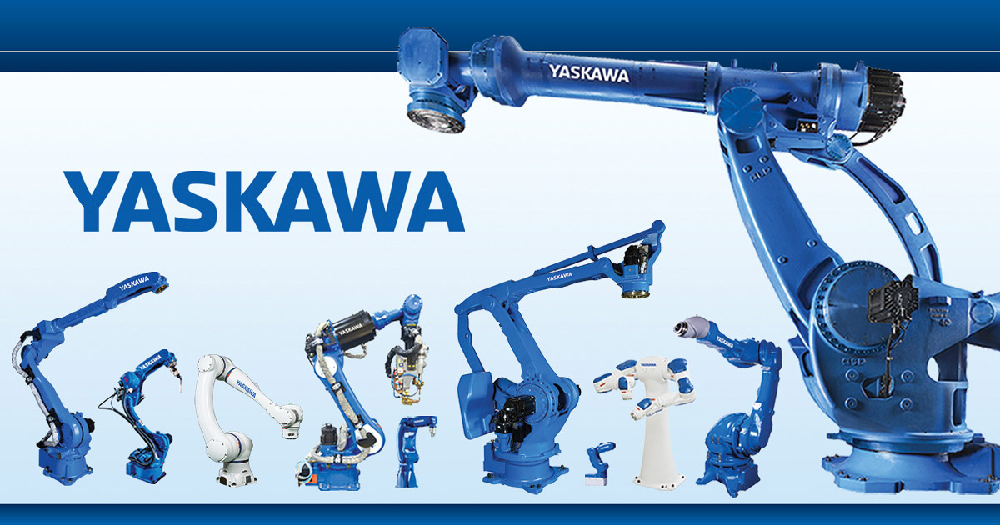

Amazon Web Services (AWS)
Foundational certification validating knowledge of AWS Cloud concepts, core services, security, architecture, pricing, and support. Demonstrates broad understanding of the AWS Cloud ecosystem.

Yaskawa America — Motoman Robotics Division
Completed hands-on training at the Yaskawa Academy in Ohio covering basic robot programming, teach pendant operation, job creation, and material handling applications on Yaskawa YRC1000 controller systems.
American Red Cross
Certified in cardiopulmonary resuscitation (C.P.R.) techniques for adult, child, and infant emergencies, obtained and maintained during tenure at Water Country USA.
American Red Cross
Certified Water Safety Instructor qualified to teach swimming and water safety courses to individuals of all ages and skill levels.
American Red Cross
Certified to train and evaluate lifeguard candidates, ensuring they meet American Red Cross standards for water rescue, surveillance, and emergency response.
American Red Cross
Trained in the proper use of Automated External Defibrillators (A.E.D.) in emergency cardiac situations in conjunction with C.P.R. protocols.
American Red Cross
Certified to instruct others in C.P.R. and A.E.D. operation, responsible for training staff and new lifeguards during time as Park Operations Supervisor at Water Country USA.